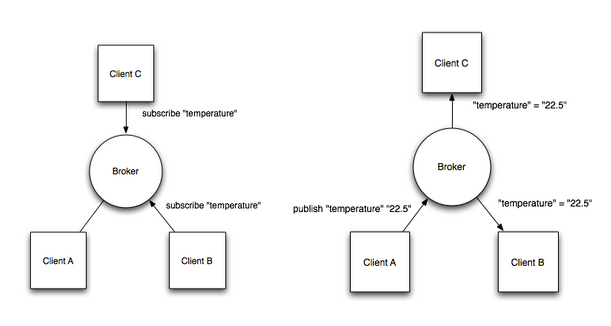

MQTT
MQTT（Message Queuing Telemetry Transport，消息队列遥测传输）是IBM开发的一个即时通讯协议，原本设计用来作为物联网的通信协议，现在国内很多企业都广泛使用MQTT作为Android手机客户端与服务器端推送消息的协议。
简单来说，机制就是使用一个代理服务器message broker，客户端client连接上这个服务器，然后告诉服务器说，我可以接收哪些类型的消息，同时，client也可以发布自己的消息，这些消息根据协议的内容，可以被其他client获取。
只要手机客户端，连上服务器，然后就可以接收和发布消息了，不用再自己写socket。低带宽，耗电量少，使用简单。

客户端B和C向服务端（Broker）订阅一个叫“temperature”的主题，当客户端A向该主题发布一条消息，客户端B和C会立刻收到Broker推送的该消息
特性
MQTT协议是为大量计算能力有限，且工作在低带宽、不可靠的网络的远程传感器和控制设备通讯而设计的协议，它具有以下主要的几项特性：
1、使用发布/订阅消息模式，提供一对多的消息发布，解除应用程序耦合；
2、对负载内容屏蔽的消息传输；
3、使用 TCP/IP 提供网络连接；
4、有三种消息发布服务质量：
“至多一次”，消息发布完全依赖底层 TCP/IP 网络。会发生消息丢失或重复。这一级别可用于如下情况，环境传感器数据，丢失一次读记录无所谓，因为不久后还会有第二次发送。
“至少一次”，确保消息到达，但消息重复可能会发生。
“只有一次”，确保消息到达一次。这一级别可用于如下情况，在计费系统中，消息重复或丢失会导致不正确的结果。
5、小型传输，开销很小（固定长度的头部是 2 字节），协议交换最小化，以降低网络流量；
6、使用 Last Will 和 Testament 特性通知有关各方客户端异常中断的机制；
MqttAndroidClient
MqttAndroidClient是Eclipse paho推出的一个基于Android的MQTT客户端，使用简单。
添加依赖
1 | repositories { |
设置客户端
1 | MqttAndroidClient mqttAndroidClient = new MqttAndroidClient(getApplicationContext(), URL, CLIENT_ID); |
URL：mqtt服务器的地址，这里给一个测试用的mqtt服务器地址：tcp://52.80.16.19:1883
CLIENT_ID：客户端的唯一认证，如果某客户端使用一个client id连上服务器，另外一个客户端是无法使用同一个client id连接服务器的
设置连接
1 | MqttConnectOptions mqttConnectOptions = new MqttConnectOptions(); |
setAutomaticReconnect：设置自动重连，设置为true后，connectionLost时会自动重新连接服务器；需要注意的是，只有在连接断开时才会重连，如果是一开始连接失败的话是不会重连的。
setKeepAliveInterval：以秒为单位，定义服务器端从客户端接收消息的最大时间间隔。一般应用服务会在业务层次检测客户端网络是否连接，不是TCP/IP协议层面的心跳机制(比如开启SOCKET的SO_KEEPALIVE选项)。 一般来讲，在一个心跳间隔内，客户端发送一个PINGREQ消息到服务器，服务器返回PINGRESP消息，完成一次心跳交互，继而等待下一轮。若客户端没有收到心跳反馈，会关闭掉TCP/IP端口连接，离线。
setCleanSession：设置为false时，当客户端断线，服务器必须保存该客户端订阅的消息，包括断线期间发布到该主题的QOS为1和2的消息，以便该客户端下一次连上服务器后依然能收到这些消息；设置为true则不保存，客户端将不会收到过时的消息，且每次重连都需要重新订阅主题。
连接mqtt服务器
1 | mqttAndroidClient.connect(mqttConnectOptions, null, new IMqttActionListener() { |
主题订阅
1 | mqttAndroidClient.subscribe(mSubtopic, 0, null, new IMqttActionListener() { |
参数依次为：
Topic, qos, context, IMqttActionListener
QOS：有3种模式，分别为
0：“至多一次”，消息发布完全依赖底层 TCP/IP 网络。会发生消息丢失或重复。这一级别可用于如下情况，环境传感器数据，丢失一次读记录无所谓，因为不久后还会有第二次发送。
1：“至少一次”，确保消息到达，但消息重复可能会发生。
2：“只有一次”，确保消息到达一次。这一级别可用于如下情况，在计费系统中，消息重复或丢失会导致不正确的结果。
消息发布
1 | String str = "Hello World!"; |
retained：该消息是否长期驻留在消息队列中